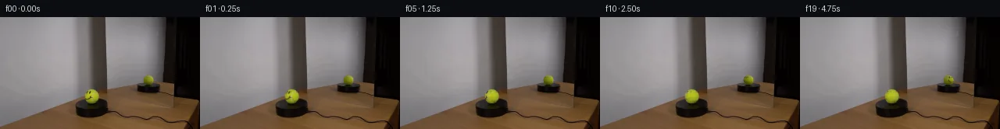

![首帧]()

Round 00
2026-11-05T12:42:14.750857+00:00像素候选变化代码 +216/−0inspection 更新
pixels 1dbceccc396dda1d · code 9ad94687bf8a20f8
查看本轮 generate.py 真实 diff
--- previous/generate.py
+++ current/generate.py
@@ -0,0 +1,216 @@
+"""Source-preserving sphere material rotation, using only local pixel operations."""
+from pathlib import Path
+import json
+import numpy as np
+from PIL import Image, ImageDraw
+from scipy.ndimage import map_coordinates, binary_dilation
+from scipy.sparse import lil_matrix
+from scipy.sparse.linalg import spsolve
+from artifact_io import save
+
+ROOT = Path(__file__).resolve().parent
+CX, CY, RX, RY = 117.3, 101.8, 9.6, 9.3
+MIRROR = (190.0, 80.8, 6.9, 6.7)
+MIRROR_AZIMUTH = np.deg2rad(-155.0)
+SPEED = np.deg2rad(30.0)
+Y, X = np.mgrid[:144, :256]
+
+
+def harmonic_fill(rgb, mask):
+ """Estimate the unmarked photographic surface with a discrete Laplace solve."""
+ locations = np.argwhere(mask)
+ index = np.full(mask.shape, -1, int)
+ index[mask] = np.arange(len(locations))
+ matrix = lil_matrix((len(locations), len(locations)), dtype=float)
+ rhs = np.zeros((len(locations), 3), float)
+ for i, (y, x) in enumerate(locations):
+ matrix[i, i] = 4
+ for ny, nx in [(y - 1, x), (y + 1, x), (y, x - 1), (y, x + 1)]:
+ if mask[ny, nx]:
+ matrix[i, index[ny, nx]] = -1
+ else:
+ rhs[i] += rgb[ny, nx]
+ result = rgb.copy()
+ result[mask] = spsolve(matrix.tocsr(), rhs)
+ return result
+
+
+def build_material(original):
+ # The masks come from printed RGB samples, not from an external model.
+ radius2 = ((X - CX) / RX) ** 2 + ((Y - CY) / RY) ** 2
+ eye1 = ((X - 111.0) / 1.55) ** 2 + ((Y - 96.6) / 2.0) ** 2 < 1.0
+ eye2 = ((X - 114.8) / 1.8) ** 2 + ((Y - 96.7) / 2.25) ** 2 < 1.0
+ mouth = np.zeros((144, 256), bool)
+ spans = {101: (114, 116), 102: (114, 116), 103: (113, 117),
+ 104: (109, 116), 105: (109, 114), 106: (109, 112)}
+ for y, (left, right) in spans.items():
+ mouth[y, left:right + 1] = True
+ seam = np.zeros_like(mouth)
+ spans = {96: (120, 123), 97: (118, 121), 98: (117, 120),
+ 99: (117, 120), 100: (117, 119), 101: (116, 119),
+ 102: (116, 119), 103: (116, 119), 104: (116, 119),
+ 105: (117, 119), 106: (117, 119), 107: (117, 120),
+ 108: (118, 121), 109: (119, 121)}
+ for y, (left, right) in spans.items():
+ seam[y, left:right + 1] = True
+ features = (eye1 | eye2 | mouth | seam) & (radius2 < 0.97)
+ blank = harmonic_fill(original, features)
+ # Relative RGB residuals transfer marker ink and pale seam while keeping
+ # the lighting of each distinct photographed view stationary.
+ residual = np.zeros_like(original)
+ residual[features] = original[features] / np.maximum(blank[features], 12) - 1
+ # Limit any inpainting interpolation anomaly, not the observed dark ink.
+ residual = np.clip(residual, -0.92, 3.0)
+ np.savez_compressed(ROOT / '.tmp' / 'surface_analysis.npz',
+ feature_mask=features, blank=blank, residual=residual)
+ return blank, residual, features
+
+
+def material_at(nx, ny, nz, texture):
+ """The observed texture is carried by its sphere, never by screen rotation."""
+ sx = CX + RX * nx
+ sy = CY - RY * ny
+ visible_source = np.clip(nz / 0.055, 0, 1)
+ observed = np.stack([
+ map_coordinates(texture[:, :, channel], [sy, sx], order=1,
+ mode='constant', cval=0, prefilter=False)
+ for channel in range(3)], axis=-1)
+ observed *= visible_source[..., None]
+
+ # A weak seam on the unseen rear material extends the tennis-ball design.
+ # Its front counterpart is entirely extracted from the supplied frame.
+ longitude = np.arctan2(nx, nz)
+ latitude = np.arcsin(np.clip(ny, -1, 1))
+ bend = 0.07 + 0.75 * (latitude + 0.08) ** 2 + 0.6 * (latitude + 0.08) ** 4
+ back_seam = np.pi - bend
+ distance = np.arctan2(np.sin(longitude - back_seam),
+ np.cos(longitude - back_seam))
… diff truncated; 129 more lines …